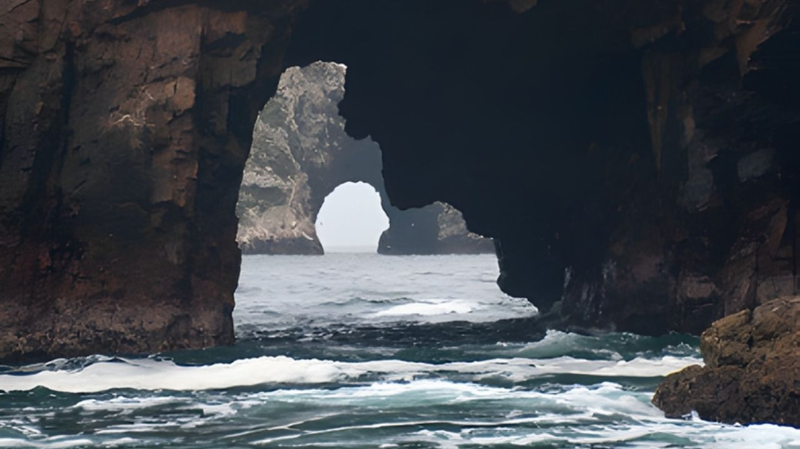
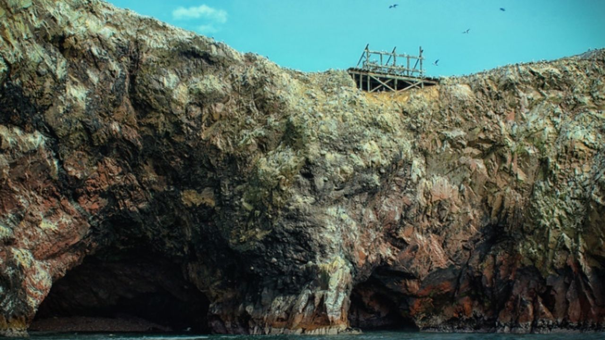
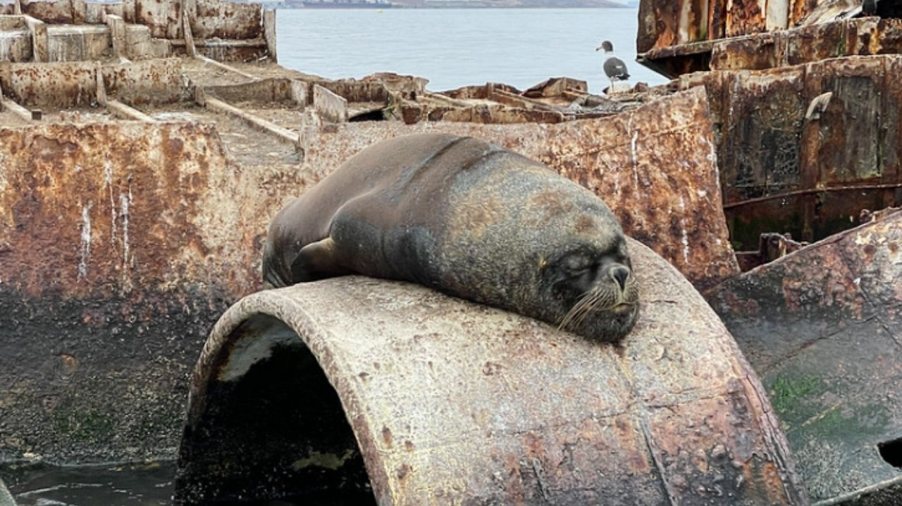

Islas Ballestas Primera Clase



Disfruta de las Islas Ballestas con la máxima comodidad y las mejores vistas.
Nuestra opción de Primera Clase te garantiza una experiencia superior.
Detalle
Te recogeremos y te acompañaremos al exclusivo muelle de Paracas, donde te embarcarás en un lujoso tour en yate de dos horas por las famosas islas de Perú. Esta experiencia VIP ofrece impresionantes vistas de las formaciones rocosas de la naturaleza y avistamientos de pingüinos de Humboldt, lobos marinos sudamericanos y una variedad de aves marinas. Disfruta del viaje en Primera Clase, con libertad extra para moverte y traer equipo fotográfico. Cada tour es dirigido por un navegante certificado y una tripulación profesional, asegurando un servicio fluido, asegurado y totalmente conforme. Los asientos preferenciales proporcionan más espacio (dos asientos por persona).
Incluye:
- Capacidad: 40 pasajeros
- Traslado al muelle de Paracas
- Transporte en bote con respaldo listo
- Navegante y tripulación profesionales
- Reserva prepaga y tasas de muelle (más de $6 USD)
- Asientos VIP (2 asientos por persona)
- Guía de habla inglesa/hispana.
No Incluye:
- Extras y propinas.
Precio:
50$
Reservar Ahora